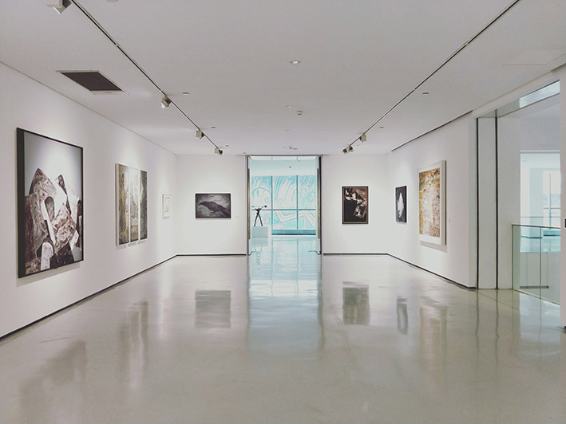
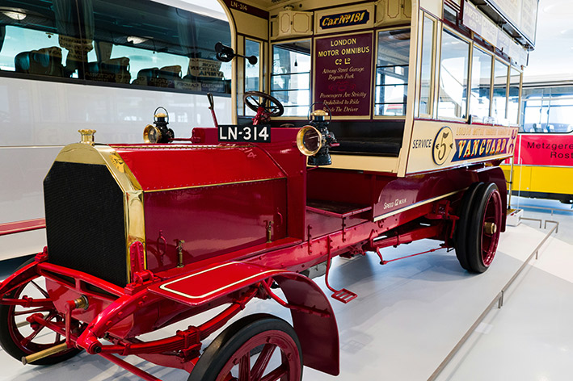
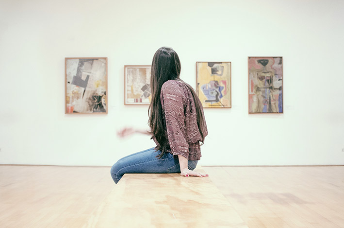
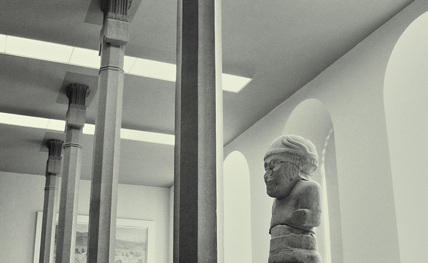
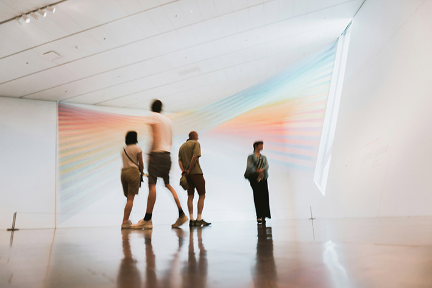
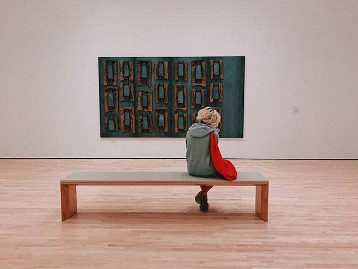
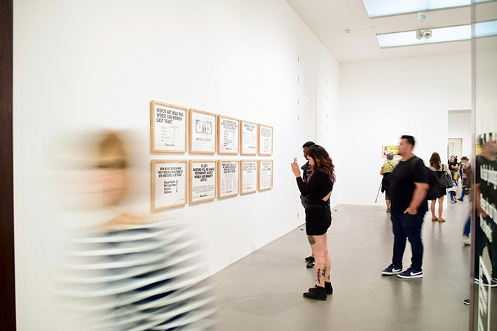
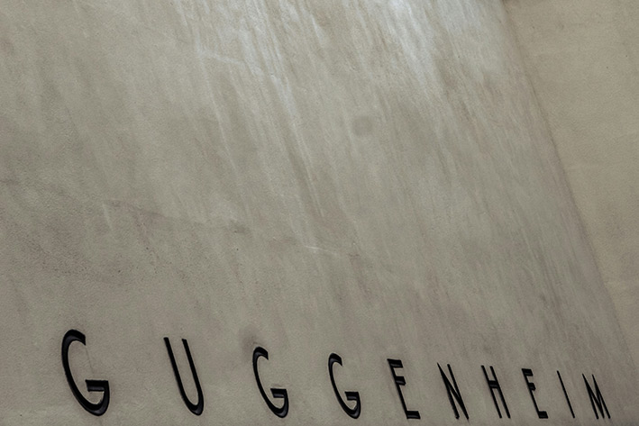

Inicio
Bienvenidos al Centro Botín, un espacio dedicado a la difusión del arte y la cultura en Santander. Descubre nuestras exposiciones, eventos y más.

Imagen destacada del Centro Botín
Exposiciones
Exposición Actual: Título de la exposición
Exposición Futura: Avance de la próxima exposición
Actividades
Talleres
Participa en nuestros talleres para todas las edades. Desde arte hasta tecnología, ofrecemos una variedad de actividades educativas.
Imagen de uno de nuestros talleres
Conferencias y Charlas
Asiste a nuestras charlas y conferencias impartidas por expertos en diversos campos. ¡No te lo pierdas!
Imagen de una conferencia reciente
Conciertos y Espectáculos
Disfruta de conciertos y espectáculos en vivo en el Centro Botín. Consulta nuestra programación y reserva tus entradas.
Imagen de un concierto en el Centro Botín
Programas Educativos
Explora nuestros programas educativos diseñados para escuelas y grupos. Descarga recursos y planifica tu visita.
Imagen de un programa educativo en acción
El Centro
Historia y Misión
Conoce la historia del Centro Botín y nuestra misión de promover el arte y la cultura en la comunidad.

Imagen representativa de la historia del centro
Arquitectura
Descubre el diseño arquitectónico del Centro Botín, obra del renombrado arquitecto Renzo Piano.
Imagen del diseño arquitectónico del centro
Equipo
Conoce a las personas que hacen posible el funcionamiento del Centro Botín, desde curadores hasta directivos.
Imagen del equipo del centro
Visita
Horarios y Tarifas
Consulta los horarios de apertura y las tarifas de entrada al Centro Botín. ¡Planifica tu visita con antelación!
Imagen de los horarios del centro
Ubicación
Encuentra nuestra ubicación en el corazón de Santander y cómo llegar utilizando diferentes medios de transporte.
Mapa de ubicación del Centro Botín